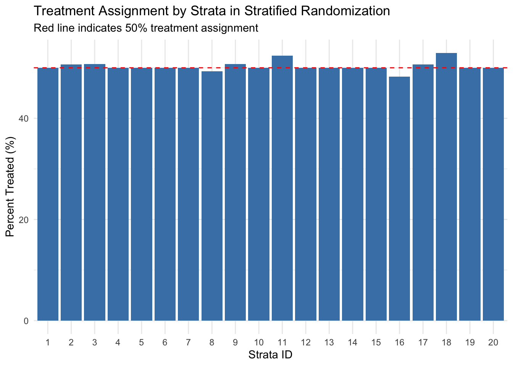
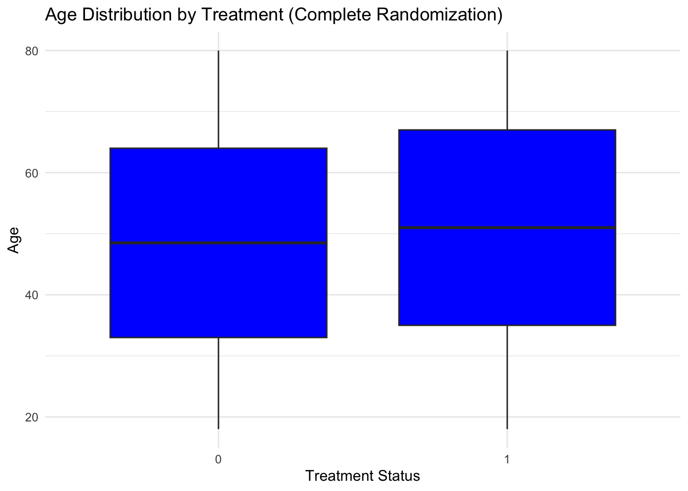
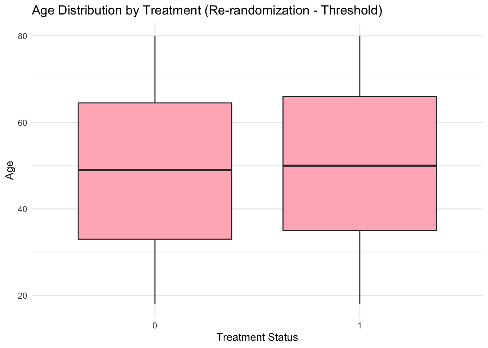
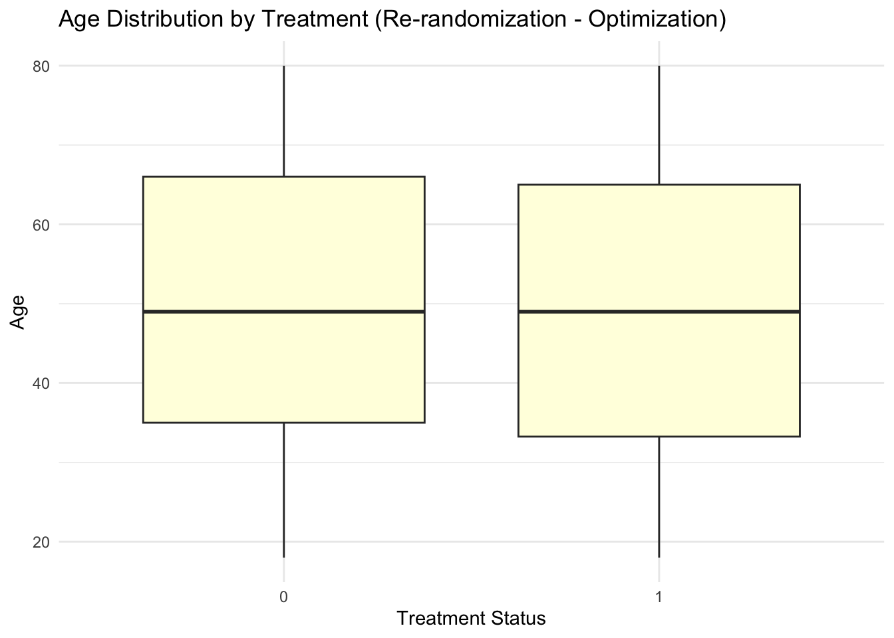
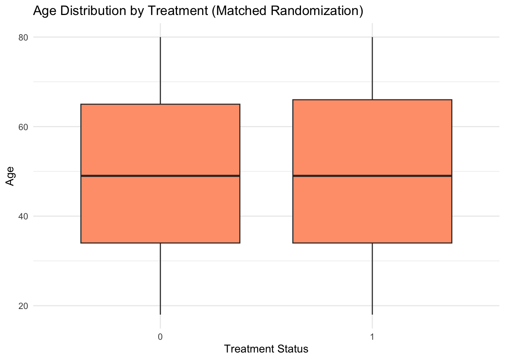

flowchart TD
%% Top nodes - conditions
A["Non-zero probability condition"]:::gold
B["Individualism condition"]:::gold
C["Unconfoundedness condition"]:::gold
%% Middle node - mechanisms
subgraph D[Classical Random Assignment Mechanisms]
F["Bernoulli Trial"]:::carolinaBlue
G["Complete Randomized\nExperiment (CRE)"]:::carolinaBlue
H["Stratified Randomization"]:::carolinaBlue
I["Rerandomization"]:::carolinaBlue
J["Matched Pairs"]:::carolinaBlue
end
subgraph E[Complex Experimental Designs]
K["Blocking"]:::carolinaBlue
L["Covariate-adaptive Randomization"]:::carolinaBlue
M["Minimization"]:::carolinaBlue
end
%% Bottom node - inference
N{{"Design-conscious Inference"}}:::uncGreen
%% Connections
A --> D
B --> D
C --> D
A --> E
B --> E
C --> E
D --> N
E --> N
%% UNC Brand Colors
classDef gold fill:#FFD100,stroke:#13294B,stroke-width:1px,color:#13294B
classDef lightGrey fill:#F7F7F7,stroke:#13294B,stroke-width:1px,color:#13294B
classDef carolinaBlue fill:#4B9CD3,stroke:#13294B,stroke-width:1px,color:#FFFFFF
classDef uncGreen fill:#8DB434,stroke:#13294B,stroke-width:1px,color:#13294B
%% Apply lightGrey style to subgraphs
style D fill:#F7F7F7,stroke:#13294B,stroke-width:1px,color:#13294B
style E fill:#F7F7F7,stroke:#13294B,stroke-width:1px,color:#13294B
Unit 2.2: Randomization Techniques
Introduction
Building on our previous discussion of optimal experimental design where we focused on maximizing statistical power under various constraints, today we turn our attention to the art and science of randomization itself. Randomization is the cornerstone of causal inference in experimental research, enabling us to make causal claims by balancing both observable and unobservable characteristics between treatment and control groups. Whereas observational studies must rely on often-questionable assumptions about selection mechanisms, properly randomized experiments provide a foundation for causal inference that is far more credible.
The power of randomization comes from its ability to create groups that are, in expectation, identical on all characteristics—not just those we can observe and measure, but also on unobservable factors that might influence outcomes. This property allows us to attribute any differences in outcomes between treatment and control groups to the treatment itself, rather than to pre-existing differences between groups.
Theoretical Foundation: Why Randomization Works
Randomization works because it satisfies three essential conditions:
- Non-zero probability condition: Each unit has a positive probability of receiving any treatment assignment.
- Individualism: The assignment of one unit doesn’t depend on the assignments of other units.
- Unconfoundedness: The treatment assignment is independent of potential outcomes.
When these conditions are met, we can write:
\[E[Y_i(0)|D_i=1] = E[Y_i(0)|D_i=0]\]
This equation states that the expected untreated potential outcome for those in the treatment group equals the expected untreated potential outcome for those in the control group. In other words, the groups are balanced on the counterfactual outcome we never get to observe for the treatment group. This balance on unobservables is the key to establishing causality.
Elements Needed for Randomization
Before discussing specific randomization methods, let’s identify what’s generally required to implement randomization:
- Sample of units: The individuals, clusters, or entities to be randomized
- Allocation ratio: The proportion of units to assign to each treatment condition
- Randomization device: A physical or computational mechanism to generate random assignments
- Baseline covariates: (For some approaches) Information on characteristics to balance across groups
Random Sampling vs. Random Assignment
It’s important to distinguish between two distinct concepts that are sometimes confused:
- Random sampling: The process of selecting units from a population so that each unit has a known probability of selection
- Random assignment: The process of allocating units to treatment conditions through a random process
Random sampling helps with external validity (generalizability), while random assignment helps with internal validity (causal inference). In many experiments, we don’t have a random sample from the population, but we still randomize treatment assignment within our convenience sample.
Graphical Unit Overview
Classical Assignment Mechanisms
There are five primary approaches to random assignment, each with distinct advantages and disadvantages:
- Bernoulli trials
- Complete randomization
- Re-randomization
- Stratified randomization
- Matched-pair designs
Let’s examine each approach in detail.
Bernoulli Trials
Bernoulli trials represent the simplest approach to randomization, where each unit is assigned to treatment independently with a fixed probability. This is conceptually equivalent to flipping a coin for each participant, with heads resulting in treatment assignment and tails resulting in control assignment.
Implementation
Let’s first create a dataset to work with:
library(data.table)
# Generate data with 1000 participants
n <- 1000
# Create baseline covariates
dt <- data.table(
# ID variable
id = 1:n,
# Covariates that will be used for stratification
age = sample(18:80, n, replace = TRUE), # Continuous
education = sample(c("None", "Primary", "Secondary", "Higher"), n, replace = TRUE,
prob = c(0.1, 0.3, 0.4, 0.2)), # Categorical
# Additional covariates not used for stratification
female = rbinom(n, 1, 0.55), # Binary
income = round(rlnorm(n, meanlog = 10, sdlog = 1), 2), # Continuous, right-skewed
rural = rbinom(n, 1, 0.4), # Binary
chronic_disease = rbinom(n, 1, 0.3), # Binary
satisfaction = sample(1:5, n, replace = TRUE, # Ordinal 1-5 scale
prob = c(0.1, 0.2, 0.4, 0.2, 0.1))
)
# Convert categorical variables to factors for clearer output
dt[, education := factor(education, levels = c("None", "Primary", "Secondary", "Higher"))]
# View data structure
print("Data structure:")[1] "Data structure:"str(dt)Classes 'data.table' and 'data.frame': 1000 obs. of 8 variables:
$ id : int 1 2 3 4 5 6 7 8 9 10 ...
$ age : int 19 34 62 45 44 74 40 24 36 34 ...
$ education : Factor w/ 4 levels "None","Primary",..: 3 3 3 2 4 3 3 2 3 3 ...
$ female : int 1 1 1 0 1 1 1 1 1 1 ...
$ income : num 15382 38850 10788 42119 17465 ...
$ rural : int 0 1 0 0 0 1 1 0 1 1 ...
$ chronic_disease: int 1 0 1 1 1 0 0 0 0 0 ...
$ satisfaction : int 2 3 1 2 1 5 3 1 3 3 ...
- attr(*, ".internal.selfref")=<externalptr> # View the first 10 observations
head(dt) id age education female income rural chronic_disease satisfaction
<int> <int> <fctr> <int> <num> <int> <int> <int>
1: 1 19 Secondary 1 15381.84 0 1 2
2: 2 34 Secondary 1 38849.92 1 0 3
3: 3 62 Secondary 1 10788.07 0 1 1
4: 4 45 Primary 0 42118.52 0 1 2
5: 5 44 Higher 1 17465.41 0 1 1
6: 6 74 Secondary 1 18718.60 1 0 5Now let’s randomize using Bernoulli:
# Make a copy of the data (so we can compare to other randomization methods below)
dt_bern <- copy(dt)
# Bernoulli trial example
set.seed(072111)
p <- 0.5 # Probability of treatment assignment
# Independent random assignment
dt_bern[, treatment := rbinom(.N, 1, p)]
# Check resulting allocation
dt_bern[, .N, by = treatment] treatment N
<int> <int>
1: 0 514
2: 1 486Advantages and Disadvantages
Advantages:
- Simple to implement
- Can randomize as participants arrive (no need to know full sample in advance)
- No baseline data needed
Disadvantages: - Random group sizes (can result in imbalanced treatment allocation) - Potential imbalance on key covariates - Vulnerable to implementation problems
Case Study: The Canadian National Breast Screening Study
The Canadian National Breast Screening Study (CNBSS) provides a cautionary tale about vulnerabilities in Bernoulli-type randomization. This major randomized trial evaluated the effectiveness of mammography screening for breast cancer in the 1980s.
The study used a variant of simple alternating assignment—assigning the first woman to treatment, the second to control, and so on. However, several critical flaws emerged:
- Pre-randomization examination: Women received clinical breast exams before randomization, providing information that could influence assignment
- Knowledge of the assignment schedule: Staff knew that assignments alternated, creating opportunities for manipulation
- Inadequate concealment: Study coordinators could see which group the next woman would be assigned to
- Evidence of manipulation: Later audits found names overwritten, identities reversed, and lines skipped in assignment ledgers
The consequences were severe: women with palpable lumps were disproportionately assigned to the mammography group, creating a significant selection bias. The mammography group had a 68% higher incidence of advanced cancers at baseline! This likely masked any potential benefits of screening, as the study ultimately reported no mortality benefit from mammography.[^1]
This case highlights how vulnerable simple randomization schemes can be to manipulation, especially when those implementing the study have preferences about treatment assignment or when the randomization process is transparent and predictable. Note that there is nothing wrong with Bernoulli trials, but you should carefully consider how to impelment randomization to preserve the integrity of the randomization process. Especially when working with partner organizations (which we do all the time in health services research), one needs to work with these partners to devise a randomization protocol that fits their existing workflow but protects the randomization process.
Complete Randomization
Complete randomization addresses some of the limitations of Bernoulli trials by fixing the number of units assigned to each treatment condition, ensuring the desired allocation ratio is achieved exactly.
Implementation
# Copy data
dt_cr <- copy(dt)
set.seed(072111) # Set seed for reproducibility
# Parameters
p <- 0.5 # Proportion to assign to treatment
# Add a column with uniform random numbers from 0 to 1.
dt_cr[, random_num := runif(.N, min = 0, max = 1)]
# Sort by random number
setorder(dt_cr, random_num)
# Assign first p% to treatment
dt_cr[, treatment := 0]
dt_cr[1:(.N*p), treatment := 1]
# Check resulting allocation
dt_cr[, .N, by = treatment] treatment N
<num> <int>
1: 1 500
2: 0 500In complete randomization, we first determine exactly how many units will receive each treatment. Then we generate a random ordering of all units and assign the first \(N_p\) units to treatment and the remaining \(N_0\) units to control.
Advantages and Disadvantages
Advantages:
Guarantees exactly the desired allocation ratio
Avoids power loss from uneven group sizes - Still relatively simple to implement
Disadvantages:
Requires knowing the full sample in advance
Still subject to chance imbalance on covariates
Let’s check the balance we got for the two examples above by running t-tests comparing the treatment and control groups.
# First let's create a function to perform t-tests and create a formatted results table
run_ttests <- function(dt, title) {
results <- data.table(
variable = character(),
method = character(),
mean_control = numeric(),
mean_treated = numeric(),
diff = numeric(),
p_value = numeric(),
significant = character()
)
for (var in baseline_vars) {
# For categorical variables (factor), we need to handle differently
if (is.factor(dt[[var]])) {
# For each level of the factor
for (level in levels(dt[[var]])) {
# Create temporary binary indicator
dt[, temp := as.numeric(get(var) == level)]
# Calculate means
mean_control <- dt[treatment == 0, mean(temp)]
mean_treated <- dt[treatment == 1, mean(temp)]
# Run t-test
t_result <- t.test(dt[treatment == 1, temp],
dt[treatment == 0, temp])
# Add to results
results <- rbind(results, data.table(
variable = paste0(var, ": ", level),
method = title,
mean_control = mean_control,
mean_treated = mean_treated,
diff = mean_treated - mean_control,
p_value = t_result$p.value,
significant = ifelse(t_result$p.value < 0.05, "*", "")
))
# Remove temporary variable
dt[, temp := NULL]
}
} else {
# For continuous and binary variables
mean_control <- dt[treatment == 0, mean(get(var), na.rm = TRUE)]
mean_treated <- dt[treatment == 1, mean(get(var), na.rm = TRUE)]
# Run t-test
t_result <- t.test(
dt[treatment == 1, get(var)],
dt[treatment == 0, get(var)]
)
# Add to results
results <- rbind(results, data.table(
variable = var,
method = title,
mean_control = mean_control,
mean_treated = mean_treated,
diff = mean_treated - mean_control,
p_value = t_result$p.value,
significant = ifelse(t_result$p.value < 0.05, "*", "")
))
}
}
return(results)
}
# Now let's run the tests
## List of all baseline covariates to test
baseline_vars <- c("age", "education", "female", "income", "rural", "chronic_disease", "satisfaction")
# Run t-tests
ttest_bern <- run_ttests(dt_bern, "Bernoulli - t-test")
ttest_cr <- run_ttests(dt_cr, "Complete - t-test")
print(ttest_bern) variable method mean_control mean_treated
<char> <char> <num> <num>
1: age Bernoulli - t-test 5.029767e+01 4.860905e+01
2: education: None Bernoulli - t-test 1.050584e-01 1.172840e-01
3: education: Primary Bernoulli - t-test 3.112840e-01 3.209877e-01
4: education: Secondary Bernoulli - t-test 3.735409e-01 3.971193e-01
5: education: Higher Bernoulli - t-test 2.101167e-01 1.646091e-01
6: female Bernoulli - t-test 5.972763e-01 5.802469e-01
7: income Bernoulli - t-test 3.698802e+04 3.183656e+04
8: rural Bernoulli - t-test 3.988327e-01 4.074074e-01
9: chronic_disease Bernoulli - t-test 3.171206e-01 3.086420e-01
10: satisfaction Bernoulli - t-test 2.964981e+00 2.917695e+00
diff p_value significant
<num> <num> <char>
1: -1.688612e+00 0.14555945
2: 1.222558e-02 0.53949726
3: 9.703608e-03 0.74185085
4: 2.357849e-02 0.44441213
5: -4.550768e-02 0.06504122
6: -1.702935e-02 0.58485993
7: -5.151461e+03 0.06919766
8: 8.574723e-03 0.78260046
9: -8.478647e-03 0.77281943
10: -4.728507e-02 0.50045109 print(ttest_cr) variable method mean_control mean_treated diff
<char> <char> <num> <num> <num>
1: age Complete - t-test 48.630 50.324 1.694
2: education: None Complete - t-test 0.116 0.106 -0.010
3: education: Primary Complete - t-test 0.320 0.312 -0.008
4: education: Secondary Complete - t-test 0.396 0.374 -0.022
5: education: Higher Complete - t-test 0.168 0.208 0.040
6: female Complete - t-test 0.584 0.594 0.010
7: income Complete - t-test 31828.744 37140.081 5311.337
8: rural Complete - t-test 0.404 0.402 -0.002
9: chronic_disease Complete - t-test 0.316 0.310 -0.006
10: satisfaction Complete - t-test 2.914 2.970 0.056
p_value significant
<num> <char>
1: 0.14434344
2: 0.61514873
3: 0.78582226
4: 0.47518803
5: 0.10571624
6: 0.74823610
7: 0.06446256
8: 0.94865983
9: 0.83809577
10: 0.42490327 Chance Imbalance in Complete Randomization
Even with perfect implementation of complete randomization, covariates may still be imbalanced by chance. In a simulation study using data from the National Longitudinal Survey of Youth (NLSY) with 722 subjects:[^1]
- ~45% of randomizations had all covariates balanced
- ~30% had one imbalanced covariate
- The remaining had multiple imbalanced covariates
This raises two critical questions: 1. How can we ensure better balance in the design phase? 2. What should we do if imbalance occurs after randomization?
Our next three approaches address the first question by improving balance through more sophisticated randomization techniques.
Re-randomization
Re-randomization attempts to improve covariate balance by generating multiple possible randomizations and selecting one with good balance.
There are two common approaches to re-randomization:
- Threshold approach: Generate randomizations until all p-values for covariate balance exceed a threshold (e.g., p > 0.1)
- Optimization approach: Generate a large number of randomizations (e.g., 1,000) and select the one with the best overall balance
Threshold Approach
# Copy the data again
dt_rerand_threshold <- copy(dt)
# Re-randomization - Threshold Approach:
# Function to test balance on key covariates
test_balance <- function(dt) {
# Define key covariates to check balance on
balance_vars <- c("age", "education", "female", "income", "rural", "chronic_disease", "satisfaction")
# Store p-values
p_values <- numeric(length(balance_vars))
names(p_values) <- balance_vars
for (i in seq_along(balance_vars)) {
var <- balance_vars[i]
# For categorical variables
if (is.factor(dt[[var]])) {
# Create model matrix (one-hot encoding)
formula_str <- paste0("~ ", var, " - 1")
mm <- model.matrix(as.formula(formula_str), data = dt)
# Test each level except the reference
p_vals_cat <- numeric(ncol(mm))
for (j in 1:ncol(mm)) {
t_result <- t.test(mm[dt$treatment == 1, j], mm[dt$treatment == 0, j])
p_vals_cat[j] <- t_result$p.value
}
# Use minimum p-value (most imbalanced category)
p_values[i] <- min(p_vals_cat)
} else {
# For continuous or binary variables
t_result <- t.test(dt[treatment == 1, get(var)], dt[treatment == 0, get(var)])
p_values[i] <- t_result$p.value
}
}
return(p_values)
}
# Re-randomization with threshold approach
# Continue generating randomizations until all p-values > 0.10
max_attempts <- 1000 # Safety limit to prevent infinite loops
attempt <- 0
balanced <- FALSE
cat("\nPerforming re-randomization with threshold approach...\n")
Performing re-randomization with threshold approach...while (!balanced && attempt < max_attempts) {
attempt <- attempt + 1
# Generate a new randomization
dt_rerand_threshold[, treatment := rbinom(.N, 1, 0.5)]
# Test balance
p_values <- test_balance(dt_rerand_threshold)
# Check if all p-values are above threshold (0.10)
if (all(p_values > 0.10)) {
balanced <- TRUE
cat("Found balanced randomization after", attempt, "attempts\n")
cat("Balance p-values:", paste(names(p_values), round(p_values, 4), collapse=", "), "\n\n")
} else if (attempt %% 100 == 0) {
cat("Completed", attempt, "attempts, continuing search...\n")
}
}Found balanced randomization after 1 attempts
Balance p-values: age 0.3607, education 0.1213, female 0.6851, income 0.595, rural 0.6301, chronic_disease 0.3026, satisfaction 0.1012 Optimization approach
You can define the “best” overall balance in different ways. Here we’ll use the Mahalanobis distance.
Note
The Mahalanobis distance is a statistical measure that quantifies the distance between a point and a distribution in multivariate space. The Mahalanobis distance is formally defined as:
\[ d_{maha} = \sqrt{(x_B - X_A)^TC^{-1}(x_B - x_A)} \]
Where: • \(x_A\) and \(x_B\) are a pair of objects • \(C\) is the sample covariance matrix • \(C^{-1}\) is the inverse of the covariance matrix • \(T\) denotes the transpose operation
# Copy data
dt_rerand_optimal <- copy(dt)
# Re-randomization - Optimization Approach:
# Generate multiple randomizations and select the one with best overall balance
cat("Performing re-randomization with optimization approach...\n")Performing re-randomization with optimization approach...n_candidates <- 1000
mahalanobis_distances <- numeric(n_candidates)
# Generate covariates matrix (need to handle factors separately)
cat("Converting covariates to numeric for Mahalanobis distance calculation...\n")Converting covariates to numeric for Mahalanobis distance calculation...cov_vars <- c("age", "female", "income", "rural", "chronic_disease", "satisfaction")
# Add dummy variables for education
edu_dummies <- model.matrix(~ education - 1, data = dt_rerand_optimal)
X <- cbind(
as.matrix(dt_rerand_optimal[, ..cov_vars]),
edu_dummies
)
# Calculate covariance matrix of covariates
S <- cov(X)
S_inv <- tryCatch({
solve(S) # Try to compute inverse
}, error = function(e) {
cat("Covariance matrix is singular, using pseudoinverse...\n")
# Use pseudoinverse if matrix is singular
library(MASS)
ginv(S)
})Covariance matrix is singular, using pseudoinverse...# Generate candidate randomizations and calculate balance measure
for (i in 1:n_candidates) {
# Generate a new randomization
treatment_assign <- rbinom(n, 1, 0.5)
# Calculate difference in means
mean_diff <- colMeans(X[treatment_assign == 1, ]) - colMeans(X[treatment_assign == 0, ])
# Calculate Mahalanobis distance
mahalanobis_distances[i] <- t(mean_diff) %*% S_inv %*% mean_diff
if (i %% 200 == 0) cat("Generated", i, "candidate randomizations...\n")
}Generated 200 candidate randomizations...
Generated 400 candidate randomizations...
Generated 600 candidate randomizations...
Generated 800 candidate randomizations...
Generated 1000 candidate randomizations...# Find the randomization with smallest Mahalanobis distance
best_idx <- which.min(mahalanobis_distances)
cat("Selected optimal randomization (candidate", best_idx, "with Mahalanobis distance =",
round(mahalanobis_distances[best_idx], 4), ")\n\n")Selected optimal randomization (candidate 165 with Mahalanobis distance = 0 )Drawbacks of Re-randomization
While re-randomization can improve balance, it has several limitations:
- Opaque constraints: The process creates a “black box” where it’s unclear what constraints are being imposed
- Unusual handling of outliers: Extreme values may force unusual allocation patterns
- Computational cost: May require many iterations, especially with multiple covariates
- Potential futility: If criteria are too strict, acceptable randomizations may be extremely rare
- Statistical inference complications: Standard methods don’t account for the re-randomization process
- Limited scope: Still cannot balance on unobserved covariates
Stratified (Block) Randomization
Stratified randomization (also called block randomization) directly addresses the balance issue by dividing the sample into strata based on covariates and randomizing separately within each stratum.
In this approach, we first create strata based on combinations of important covariates, then randomize separately within each stratum. This guarantees perfect balance on the stratification variables.
Selecting Stratification Variables
Not all covariates are equally important for stratification. Consider these guidelines:
- Discrete variables are easier to implement than continuous ones
- Prioritize variables that strongly predict outcomes (baseline values of the outcome variable are especially important)
- Include variables where heterogeneous effects are expected (facilitates subgroup analysis)
- Be careful about creating too many strata, which can lead to “small cell” problems
Handling “Misfits”
A practical challenge in stratified randomization occurs when strata sizes are not divisible by the number of treatment conditions (e.g., three people in a stratum with two treatment conditions). Options for these “misfits” include:
- Remove units randomly to create divisible strata
- Create a separate stratum for misfits
- Use a different randomization approach for misfits
Implementation
# Copy the Data
dt_strat <- copy(dt)
# Set the seed using Zoe's bday
set.seed(072111) # For reproducibility
# Convert categorical variables to factors for clearer output
dt_strat[, education := factor(education, levels = c("None", "Primary", "Secondary", "Higher"))]
# Create age quintiles
dt_strat[, age_quintile := cut(age,
breaks = quantile(age, probs = seq(0, 1, 0.2), na.rm = TRUE),
labels = 1:5,
include.lowest = TRUE)]
# View data structure
print("Data structure:")[1] "Data structure:"str(dt_strat)Classes 'data.table' and 'data.frame': 1000 obs. of 9 variables:
$ id : int 1 2 3 4 5 6 7 8 9 10 ...
$ age : int 19 34 62 45 44 74 40 24 36 34 ...
$ education : Factor w/ 4 levels "None","Primary",..: 3 3 3 2 4 3 3 2 3 3 ...
$ female : int 1 1 1 0 1 1 1 1 1 1 ...
$ income : num 15382 38850 10788 42119 17465 ...
$ rural : int 0 1 0 0 0 1 1 0 1 1 ...
$ chronic_disease: int 1 0 1 1 1 0 0 0 0 0 ...
$ satisfaction : int 2 3 1 2 1 5 3 1 3 3 ...
$ age_quintile : Factor w/ 5 levels "1","2","3","4",..: 1 2 4 3 3 5 2 1 2 2 ...
- attr(*, ".internal.selfref")=<externalptr> # Create strata ID by combining education and age quintile
dt_strat[, strata := .GRP, by = .(education, age_quintile)]
# Print strata information
print("Strata information:")[1] "Strata information:"dt_strat[, .(count = .N), by = .(education, age_quintile, strata)][order(strata)] education age_quintile strata count
<fctr> <fctr> <int> <int>
1: Secondary 1 1 86
2: Secondary 2 2 75
3: Secondary 4 3 71
4: Primary 3 4 60
5: Higher 3 5 42
6: Secondary 5 6 76
7: Primary 1 7 66
8: Primary 4 8 69
9: Primary 5 9 65
10: Primary 2 10 56
11: None 5 11 21
12: Higher 4 12 36
13: Higher 1 13 42
14: Higher 2 14 38
15: Higher 5 15 30
16: None 2 16 29
17: Secondary 3 17 77
18: None 3 18 17
19: None 4 19 24
20: None 1 20 20
education age_quintile strata countNow let’s randomize half of the observations in each strata to treatment and half to control. To ensure 50/50 split, we’ll use the Complete Randomization method within each strata:
dt_strat[, treatment := 0] # Initialize all to control
for (s in unique(dt_strat$strata)) {
# Get all units in this stratum
stratum_units <- dt_strat[strata == s, id]
n_units <- length(stratum_units)
# Determine number to treat (half, rounded down)
n_treat <- floor(n_units/2)
# Misfits: If n_units is odd, flip a coin to decide whether to round up or down
if (n_units %% 2 == 1) {
if (runif(1) < 0.5) n_treat <- n_treat + 1
}
# Randomly select units for treatment
treated_units <- sample(stratum_units, n_treat)
# Assign treatment
dt_strat[id %in% treated_units, treatment := 1]
}
# Print treatment assignment by strata for stratified randomization
print("Treatment assignment by strata in stratified randomization:")[1] "Treatment assignment by strata in stratified randomization:"dt_strat[, .(N = .N,
n_treated = sum(treatment),
pct_treated = mean(treatment)*100),
by = strata][order(strata)] strata N n_treated pct_treated
<int> <int> <num> <num>
1: 1 86 43 50.00000
2: 2 75 38 50.66667
3: 3 71 36 50.70423
4: 4 60 30 50.00000
5: 5 42 21 50.00000
6: 6 76 38 50.00000
7: 7 66 33 50.00000
8: 8 69 34 49.27536
9: 9 65 33 50.76923
10: 10 56 28 50.00000
11: 11 21 11 52.38095
12: 12 36 18 50.00000
13: 13 42 21 50.00000
14: 14 38 19 50.00000
15: 15 30 15 50.00000
16: 16 29 14 48.27586
17: 17 77 39 50.64935
18: 18 17 9 52.94118
19: 19 24 12 50.00000
20: 20 20 10 50.00000
strata N n_treated pct_treatedMatched Pairs Randomization
Matched pairs randomization represents the extreme case of stratification, where each stratum contains exactly two similar units, and one is randomly assigned to treatment and one to control.
In this approach, we first create pairs of similar units based on a distance metric, then randomly assign one member of each pair to treatment and the other to control. This guarantees excellent balance on the matching variables.
Implementation
In this example, we’re using what is referred to as a “greedy” matching algorithm. It is “greedy” because it makes locally optimal choices at each step without reconsidering earlier decisions, potentially missing the globally optimal solution. We’re using this for now because it is clear and simple to impelment.
In practice, “canned” matching commands are commonly used to form matches and these often use other optimal matching algorithms. A non-greedy, optimal matching algorithm would consider all possible ways to pair units and select the configuration that minimizes the total sum of distances across all pairs. This is computationally more intensive (often solved using network optimization methods like the Hungarian algorithm) but guarantees the global minimum total distance.
dt_matched <- copy(dt)
# Set the seed using Zoe's bday
set.seed(072111) # For reproducibility
# 1. Prepare data for matching
cat("\nPerforming matched randomization using Mahalanobis distance...\n")
Performing matched randomization using Mahalanobis distance...# Create matrix of variables to match on
match_vars <- c("age", "female", "income", "rural", "chronic_disease")
# Convert education to dummy variables for inclusion in distance calculation
edu_dummies <- model.matrix(~ education - 1, data = dt_matched)
colnames(edu_dummies) <- paste0("edu_", levels(dt_matched$education))
# Combine numeric variables with education dummies
X <- cbind(as.matrix(dt_matched[, ..match_vars]), edu_dummies)
# Calculate covariance matrix and inverse
S <- cov(X)
S_inv <- tryCatch({
solve(S) # Try to compute inverse
}, error = function(e) {
cat("Covariance matrix is singular, using pseudoinverse...\n")
# Use pseudoinverse if matrix is singular
library(MASS)
ginv(S)
})Covariance matrix is singular, using pseudoinverse...# 2. Calculate pairwise Mahalanobis distances between all units
n <- nrow(dt_matched)
dist_matrix <- matrix(0, n, n)
# Store original IDs to maintain correct mapping
original_ids <- dt_matched$id
cat("Calculating Mahalanobis distances between all units...\n")Calculating Mahalanobis distances between all units...for (i in 1:(n-1)) {
for (j in (i+1):n) {
# Calculate vector of differences between units i and j
diff <- X[i,] - X[j,]
# Calculate Mahalanobis distance
dist_matrix[i,j] <- dist_matrix[j,i] <- sqrt(t(diff) %*% S_inv %*% diff)
}
if (i %% 100 == 0) cat("Processed", i, "of", n, "units...\n")
}Processed 100 of 1000 units...
Processed 200 of 1000 units...
Processed 300 of 1000 units...
Processed 400 of 1000 units...
Processed 500 of 1000 units...
Processed 600 of 1000 units...
Processed 700 of 1000 units...
Processed 800 of 1000 units...
Processed 900 of 1000 units...# 3. Create optimal pairs using greedy algorithm
cat("Creating optimal pairs...\n")Creating optimal pairs...unpaired_idx <- 1:n # These are indices, not IDs
pairs_idx <- list() # Store pairs of indices
while (length(unpaired_idx) >= 2) {
# Find the nearest neighbor for the first unpaired unit
current_idx <- unpaired_idx[1]
distances <- dist_matrix[current_idx, unpaired_idx[-1]]
nearest_pos <- which.min(distances)
nearest_idx <- unpaired_idx[nearest_pos + 1] # +1 because we excluded current from unpaired
# Create a new pair of indices
pairs_idx <- c(pairs_idx, list(c(current_idx, nearest_idx)))
# Remove these indices from unpaired
unpaired_idx <- unpaired_idx[!unpaired_idx %in% c(current_idx, nearest_idx)]
if (length(pairs_idx) %% 50 == 0) cat("Created", length(pairs_idx), "pairs...\n")
}Created 50 pairs...
Created 100 pairs...
Created 150 pairs...
Created 200 pairs...
Created 250 pairs...
Created 300 pairs...
Created 350 pairs...
Created 400 pairs...
Created 450 pairs...
Created 500 pairs...# Handle leftover unit if odd number of units
if (length(unpaired_idx) == 1) {
cat("Note: Odd number of units. Unit index", unpaired_idx, "will be randomly assigned.\n")
# This unit will be handled separately
}
# 4. Convert index pairs to ID pairs and assign treatments
pairs <- lapply(pairs_idx, function(p) original_ids[p])
# Reset pair_id and treatment in the dataset
dt_matched[, pair_id := NA_integer_]
dt_matched[, treatment := 0] # Initialize all to control
cat("Assigning pair IDs and treatment...\n")Assigning pair IDs and treatment...for (i in seq_along(pairs)) {
# Assign pair ID to both units in the pair
dt_matched[id %in% pairs[[i]], pair_id := i]
# Randomly select one unit for treatment
treated_id <- sample(pairs[[i]], 1)
dt_matched[id == treated_id, treatment := 1]
}
# Handle leftover unit if exists
if (length(unpaired_idx) == 1) {
leftover_id <- original_ids[unpaired_idx]
# Assign to a special "pair" ID
dt_matched[id == leftover_id, pair_id := length(pairs) + 1]
# Randomly assign to treatment or control
if (runif(1) < 0.5) {
dt_matched[id == leftover_id, treatment := 1]
}
}
# Verify pair assignments
pair_counts <- dt_matched[!is.na(pair_id), .N, by = pair_id]
cat("\nVerifying pair assignments:\n")
Verifying pair assignments:Number of unique pairs: 500 cat("Distribution of pair sizes:\n")Distribution of pair sizes:
2
500 # Check treatment balance
cat("\nTreatment balance:\n")
Treatment balance:cat("Treatment group size:", dt_matched[treatment == 1, .N], "\n")Treatment group size: 500 cat("Control group size:", dt_matched[treatment == 0, .N], "\n")Control group size: 500 # Display the first 10 pairs, sorted by pair_id
dt_matched[pair_id %in% 1:10][order(pair_id), .(id, pair_id, treatment, age, education, income)] id pair_id treatment age education income
<int> <int> <num> <int> <fctr> <num>
1: 1 1 1 19 Secondary 15381.84
2: 314 1 0 19 None 15029.52
3: 2 2 1 34 Secondary 38849.92
4: 377 2 0 33 Primary 35934.18
5: 3 3 0 62 Secondary 10788.07
6: 241 3 1 62 Secondary 9877.48
7: 4 4 0 45 Primary 42118.52
8: 449 4 1 45 Secondary 40293.28
9: 5 5 1 44 Higher 17465.41
10: 846 5 0 44 Primary 17352.46
11: 6 6 0 74 Secondary 18718.60
12: 760 6 1 74 Secondary 18864.18
13: 7 7 0 40 Secondary 13593.29
14: 308 7 1 40 Secondary 15251.64
15: 8 8 1 24 Primary 21565.13
16: 468 8 0 24 Primary 22107.18
17: 9 9 1 36 Secondary 22274.83
18: 660 9 0 36 Higher 23510.64
19: 10 10 1 34 Secondary 9627.04
20: 490 10 0 34 Higher 9721.55
id pair_id treatment age education incomeAdvantages and Limitations
Advantages: - Achieves excellent balance on matching variables - Works well with continuous covariates - Reduces variance in treatment effect estimates
Limitations: - Finding good matches becomes difficult with many covariates - May discard units that can’t be well-matched - Requires all baseline data before randomization - Analysis must account for pairing structure
Verifying Balance: Approaches and Best Practices
After randomization, it’s crucial to verify that balance between the treatment and control group was achieved. Several approaches exist:
- Individual Covariate Tests: Test balance one-by-one
- Joint Omnibus Test: Test that all covariates are jointly balanced (often combined with tests on each covariate)
- Regression-Based Tests: Regress treatment assignment on each covariate. Also allows you to control for strata or matched pair fixed effects.
Individual Covariate Tests
The most common approach is to test each covariate separately: - t-tests for continuous variables - Chi-square tests for categorical variables
Let’s demonstrate this with data from the strata randomization example.
# List of all baseline covariates to test
baseline_vars <- c("age", "education", "female", "income", "rural", "chronic_disease", "satisfaction")
# Function to perform t-tests and create a formatted results table
run_ttests <- function(dt, title) {
results <- data.table(
variable = character(),
method = character(),
mean_control = numeric(),
mean_treated = numeric(),
diff = numeric(),
p_value = numeric(),
significant = character()
)
for (var in baseline_vars) {
# For categorical variables (factor), we need to handle differently
if (is.factor(dt[[var]])) {
# For each level of the factor
for (level in levels(dt[[var]])) {
# Create temporary binary indicator
dt[, temp := as.numeric(get(var) == level)]
# Calculate means
mean_control <- dt[treatment == 0, mean(temp)]
mean_treated <- dt[treatment == 1, mean(temp)]
# Run t-test
t_result <- t.test(dt[treatment == 1, temp],
dt[treatment == 0, temp])
# Add to results
results <- rbind(results, data.table(
variable = paste0(var, ": ", level),
method = title,
mean_control = mean_control,
mean_treated = mean_treated,
diff = mean_treated - mean_control,
p_value = t_result$p.value,
significant = ifelse(t_result$p.value < 0.05, "*", "")
))
# Remove temporary variable
dt[, temp := NULL]
}
} else {
# For continuous and binary variables
mean_control <- dt[treatment == 0, mean(get(var), na.rm = TRUE)]
mean_treated <- dt[treatment == 1, mean(get(var), na.rm = TRUE)]
# Run t-test
t_result <- t.test(
dt[treatment == 1, get(var)],
dt[treatment == 0, get(var)]
)
# Add to results
results <- rbind(results, data.table(
variable = var,
method = title,
mean_control = mean_control,
mean_treated = mean_treated,
diff = mean_treated - mean_control,
p_value = t_result$p.value,
significant = ifelse(t_result$p.value < 0.05, "*", "")
))
}
}
return(results)
}
# Run t-tests for all randomization methods
ttest_strat <- run_ttests(dt_strat, "Stratified - t-test")
#Display ResultJoint Omnibus Tests
F-tests can test multiple covariates simultaneously, reducing the multiple testing problem.
# Function to perform F-test
joint_balance_test <- function(dt) {
# Regress treatment on covariates
model <- lm(treatment ~ age + income + female + education + chronic_disease,
data = dt)
# Extract F-statistic and p-value for joint significance
f_test <- summary(model)$fstatistic
f_value <- f_test[1]
df1 <- f_test[2]
df2 <- f_test[3]
p_value <- pf(f_value, df1, df2, lower.tail = FALSE)
result <- data.table(
f_value = f_value,
df1 = df1,
df2 = df2,
p_value = p_value
)
return(result)
}
# Run joint test
joint_test <- joint_balance_test(dt_strat)
cat("Joint balance test (F-test):\n")Joint balance test (F-test):cat("F(", joint_test$df1, ",", joint_test$df2, ") = ",
round(joint_test$f_value, 2), ", p = ", round(joint_test$p_value, 4), "\n", sep="")F(7,992) = 0.49, p = 0.841Regression-Based Tests
Regress treatment assignment on each covariate; if randomization worked, coefficients should be insignificant.
Again, we’ll use the data created for the stratified randomization example. First, let’s look at this approach not controlling for strata fixed effects:
library(fixest) # For fixed effects
# Function to perform OLS regressions without strata fixed effects
run_ols_no_strata <- function(dt, title) {
results <- data.table(
variable = character(),
method = character(),
coefficient = numeric(),
std_error = numeric(),
p_value = numeric(),
significant = character()
)
for (var in baseline_vars) {
# Handle factor variables
if (is.factor(dt[[var]])) {
# Create one-hot encoding
for (level in levels(dt[[var]])[2:length(levels(dt[[var]]))]) { # Skip first level (reference)
dt[, temp := as.numeric(get(var) == level)]
# Run regression
reg <- feols(temp ~ treatment, data = dt)
# Add to results
results <- rbind(results, data.table(
variable = paste0(var, ": ", level, " vs ", levels(dt[[var]])[1]),
method = title,
coefficient = coef(reg)["treatment"],
std_error = se(reg)["treatment"],
p_value = pvalue(reg)["treatment"],
significant = ifelse(pvalue(reg)["treatment"] < 0.05, "*", "")
))
# Remove temporary variable
dt[, temp := NULL]
}
} else {
# For continuous and binary variables
formula_str <- paste0(var, " ~ treatment")
reg <- feols(as.formula(formula_str), data = dt)
# Add to results
results <- rbind(results, data.table(
variable = var,
method = title,
coefficient = coef(reg)["treatment"],
std_error = se(reg)["treatment"],
p_value = pvalue(reg)["treatment"],
significant = ifelse(pvalue(reg)["treatment"] < 0.05, "*", "")
))
}
}
return(results)
}
# Run OLS without strata for both randomization methods
ols_strat <- run_ols_no_strata(dt_strat, "Stratified - OLS no Strata FE")
# Display results
print(ols_strat) variable method coefficient
<char> <char> <num>
1: age Stratified - OLS no Strata FE 2.221876e-01
2: education: Primary vs None Stratified - OLS no Strata FE -2.528040e-03
3: education: Secondary vs None Stratified - OLS no Strata FE 2.920047e-03
4: education: Higher vs None Stratified - OLS no Strata FE -1.504024e-03
5: female Stratified - OLS no Strata FE -3.471256e-02
6: income Stratified - OLS no Strata FE 1.481540e+03
7: rural Stratified - OLS no Strata FE 1.477624e-02
8: chronic_disease Stratified - OLS no Strata FE -4.050465e-02
9: satisfaction Stratified - OLS no Strata FE 4.446471e-02
std_error p_value significant
<num> <num> <char>
1: 1.160745e+00 0.8482370
2: 2.943325e-02 0.9315706
3: 3.080592e-02 0.9245019
4: 2.473571e-02 0.9515277
5: 3.112980e-02 0.2650800
6: 2.873209e+03 0.6062205
7: 3.104979e-02 0.6342580
8: 2.932947e-02 0.1675812
9: 7.016046e-02 0.5263844 These should be very close to the t-tests above.
Now let’s do this controlling for strata. The reason we’d want to do this is because, as we’ll see later, we need to estimate the treatment effect following the way the randomization was done, period. In other words, these need to be aligned. So, if we want to test our balance on baseline covariates, estimate the treatment effect once we have the endline data, it makes sense to include strata fixed effects here.
# Function to perform OLS regressions with strata fixed effects
run_ols_with_strata <- function(dt, title) {
results <- data.table(
variable = character(),
method = character(),
coefficient = numeric(),
std_error = numeric(),
p_value = numeric(),
significant = character()
)
for (var in baseline_vars) {
# Handle factor variables
if (is.factor(dt[[var]])) {
for (level in levels(dt[[var]])[2:length(levels(dt[[var]]))]) { # Skip first level (reference)
dt[, temp := as.numeric(get(var) == level)]
# Run regression with strata fixed effects
reg <- feols(temp ~ treatment | strata, data = dt)
# Add to results
results <- rbind(results, data.table(
variable = paste0(var, ": ", level, " vs ", levels(dt[[var]])[1]),
method = title,
coefficient = coef(reg)["treatment"],
std_error = se(reg)["treatment"],
p_value = pvalue(reg)["treatment"],
significant = ifelse(pvalue(reg)["treatment"] < 0.05, "*", "")
))
# Remove temporary variable
dt[, temp := NULL]
}
} else {
# For continuous and binary variables
formula_str <- paste0(var, " ~ treatment | strata")
reg <- feols(as.formula(formula_str), data = dt)
# Add to results
results <- rbind(results, data.table(
variable = var,
method = title,
coefficient = coef(reg)["treatment"],
std_error = se(reg)["treatment"],
p_value = pvalue(reg)["treatment"],
significant = ifelse(pvalue(reg)["treatment"] < 0.05, "*", "")
))
}
}
return(results)
}
# Run OLS with strata/pair fixed effects
ols_strat_fe <- run_ols_with_strata(dt_strat, "Stratified - OLS with strata FE")
# Display results
print(ols_strat_fe) variable method coefficient
<char> <char> <num>
1: age Stratified - OLS with strata FE 0.11773106
2: education: Primary vs None Stratified - OLS with strata FE 0.00000000
3: education: Secondary vs None Stratified - OLS with strata FE 0.00000000
4: education: Higher vs None Stratified - OLS with strata FE 0.00000000
5: female Stratified - OLS with strata FE -0.03450692
6: income Stratified - OLS with strata FE 1478.11717275
7: rural Stratified - OLS with strata FE 0.01458971
8: chronic_disease Stratified - OLS with strata FE -0.04085313
9: satisfaction Stratified - OLS with strata FE 0.04348112
std_error p_value significant
<num> <num> <char>
1: 2.273435e-01 0.6105367
2: NaN NA <NA>
3: NaN NA <NA>
4: NaN NA <NA>
5: 2.982420e-02 0.2616078
6: 2.687661e+03 0.5887514
7: 2.894125e-02 0.6199764
8: 2.597797e-02 0.1323144
9: 8.089327e-02 0.5971538
Note
Notice the regressions for education variables are not computing. Why do you think this is?
Standardized Differences
For large samples, p-values become less informative as tiny imbalances become statistically significant. Standardized mean differences (SMDs) provide a sample size-independent measure:
\[SMD = \frac{\bar{X}_{treatment} - \bar{X}_{control}}{\sqrt{\frac{s^2_{treatment} + s^2_{control}}{2}}}\]
A common rule of thumb is that an absolute SMD less than 0.1 indicates negligible imbalance.
# Calculate standardized differences
standardized_diff <- function(dt) {
covariates <- c("age", "income", "female", "chronic_disease")
results <- data.table(
covariate = character(),
mean_treated = numeric(),
mean_control = numeric(),
sd_treated = numeric(),
sd_control = numeric(),
std_diff = numeric(),
stringsAsFactors = FALSE
)
for (cov in covariates) {
# Calculate means and SDs by group
treated <- dt[treatment == 1, get(cov)] # Use get() to retrieve column dynamically
control <- dt[treatment == 0, get(cov)] # Use get() to retrieve column dynamically
mean_treated <- mean(treated, na.rm = TRUE)
mean_control <- mean(control, na.rm = TRUE)
sd_treated <- sd(treated, na.rm = TRUE)
sd_control <- sd(control, na.rm = TRUE)
# Calculate standardized difference
pooled_sd <- sqrt((sd_treated^2 + sd_control^2) / 2)
std_diff <- (mean_treated - mean_control) / pooled_sd
results <- rbind(results, data.table(
covariate = cov,
mean_treated = mean_treated,
mean_control = mean_control,
sd_treated = sd_treated,
sd_control = sd_control,
std_diff = std_diff
))
}
# Handle education separately (categorical variable)
if ("education" %in% names(dt)) {
# For each level of education
edu_levels <- levels(dt$education)
for (level in edu_levels) {
# Create indicator for this level
dt[, temp := as.numeric(education == level)]
# Calculate means by group
treated <- dt[treatment == 1, mean(temp, na.rm = TRUE)]
control <- dt[treatment == 0, mean(temp, na.rm = TRUE)]
# For proportions, the SD is sqrt(p*(1-p))
sd_treated <- sqrt(treated * (1-treated))
sd_control <- sqrt(control * (1-control))
# Calculate standardized difference
pooled_sd <- sqrt((sd_treated^2 + sd_control^2) / 2)
# Avoid division by zero
if (pooled_sd == 0) {
std_diff <- 0
} else {
std_diff <- (treated - control) / pooled_sd
}
results <- rbind(results, data.table(
covariate = paste0("education: ", level),
mean_treated = treated,
mean_control = control,
sd_treated = sd_treated,
sd_control = sd_control,
std_diff = std_diff
))
# Remove temporary variable
dt[, temp := NULL]
}
}
return(results)
}
# Calculate standardized differences
std_diffs <- standardized_diff(dt_strat)
print(std_diffs) covariate mean_treated mean_control sd_treated sd_control
<char> <num> <num> <num> <num>
1: age 4.958765e+01 4.936546e+01 1.833769e+01 1.836811e+01
2: income 3.522222e+04 3.374068e+04 4.624246e+04 4.459409e+04
3: female 5.717131e-01 6.064257e-01 4.953241e-01 4.890335e-01
4: chronic_disease 2.928287e-01 3.333333e-01 4.555144e-01 4.718785e-01
5: education: None 1.115538e-01 1.104418e-01 3.148167e-01 3.134396e-01
6: education: Primary 3.147410e-01 3.172691e-01 4.644127e-01 4.654132e-01
7: education: Secondary 3.864542e-01 3.835341e-01 4.869367e-01 4.862465e-01
8: education: Higher 1.872510e-01 1.887550e-01 3.901129e-01 3.913139e-01
std_diff
<num>
1: 0.012106399
2: 0.032614530
3: -0.070526901
4: -0.087338046
5: 0.003540005
6: -0.005437661
7: 0.006001020
8: -0.003849426Comprehensive “Table 1”
Now, let’s create a comprehensive “Table 1” for the stratified random sample
# Install and load required packages
library(tidyr)
library(dplyr)
library(gt)
# Calculate standardized differences for stratified randomization
std_diff_strat <- standardized_diff(dt_strat)
# Function to extract p-values from all balance tests
extract_pvalues <- function(test_results) {
results <- test_results[, .(variable, p_value)]
setnames(results, "variable", "covariate")
return(results)
}
# Extract p-values from different testing approaches for stratified randomization
pvals_strat_ttest <- extract_pvalues(ttest_strat)
pvals_strat_ttest[, approach := "t-test"]
pvals_strat_ols <- extract_pvalues(ols_strat)
pvals_strat_ols[, approach := "OLS (no strata FE)"]
pvals_strat_ols_fe <- extract_pvalues(ols_strat_fe)
pvals_strat_ols_fe[, approach := "OLS (with strata FE)"]
# Combine all p-values for stratified randomization
strat_pvals <- rbind(
pvals_strat_ttest,
pvals_strat_ols,
pvals_strat_ols_fe
)
# Create a wide format of p-values
pvals_wide <- strat_pvals %>%
as.data.frame() %>%
pivot_wider(
id_cols = covariate,
names_from = approach,
values_from = p_value
)
# Join with standardized differences
strat_balance_table <- merge(
std_diff_strat,
pvals_wide,
by = "covariate",
all = TRUE
)
# Mark significant values with asterisks directly in the data
strat_balance_table <- strat_balance_table %>%
mutate(
std_diff_mark = ifelse(abs(std_diff) > 0.25,
paste0(format(round(std_diff, 3), nsmall=3), "†"),
format(round(std_diff, 3), nsmall=3)),
`t-test_mark` = ifelse(`t-test` < 0.05,
paste0(format(round(`t-test`, 3), nsmall=3), "*"),
format(round(`t-test`, 3), nsmall=3)),
`OLS (no strata FE)_mark` = ifelse(`OLS (no strata FE)` < 0.05,
paste0(format(round(`OLS (no strata FE)`, 3), nsmall=3), "*"),
format(round(`OLS (no strata FE)`, 3), nsmall=3)),
`OLS (with strata FE)_mark` = ifelse(`OLS (with strata FE)` < 0.05,
paste0(format(round(`OLS (with strata FE)`, 3), nsmall=3), "*"),
format(round(`OLS (with strata FE)`, 3), nsmall=3))
)
# Create gt table with the marked columns
strat_balance_table %>%
select(covariate, std_diff_mark, `t-test_mark`, `OLS (no strata FE)_mark`, `OLS (with strata FE)_mark`) %>%
gt() %>%
# Rename columns
cols_label(
covariate = "Baseline Covariate",
std_diff_mark = "Standardized Difference",
`t-test_mark` = "t-test",
`OLS (no strata FE)_mark` = "OLS (standard)",
`OLS (with strata FE)_mark` = "OLS (with strata FE)"
) %>%
# Add column spanners for organization
tab_spanner(
label = "Balance Measure",
columns = "std_diff_mark"
) %>%
tab_spanner(
label = "P-values by Testing Approach",
columns = c("t-test_mark", "OLS (no strata FE)_mark", "OLS (with strata FE)_mark")
) %>%
# Add title and footnotes
tab_header(
title = "Table 1: Balance Assessment in Stratified Randomization",
subtitle = "Comparison of Different Testing Approaches"
) %>%
tab_footnote(
footnote = "† Standardized differences >0.25, indicating potential imbalance.",
locations = cells_column_labels(columns = "std_diff_mark")
) %>%
tab_footnote(
footnote = "* P-values <0.05, indicating statistically significant differences.",
locations = cells_column_spanners(spanners = "P-values by Testing Approach")
) %>%
tab_footnote(
footnote = "OLS with strata fixed effects is the most appropriate approach given the stratified design.",
locations = cells_column_labels(columns = "OLS (with strata FE)_mark")
) %>%
# Nicer formatting
tab_options(
column_labels.font.weight = "bold",
column_labels.background.color = "#EEEEEE",
table.width = pct(100),
heading.background.color = "#E6F0FF",
heading.title.font.size = px(16),
heading.subtitle.font.size = px(14)
)| Table 1: Balance Assessment in Stratified Randomization | ||||
|---|---|---|---|---|
| Comparison of Different Testing Approaches | ||||
| Baseline Covariate |
Balance Measure
|
P-values by Testing Approach1
|
||
| Standardized Difference2 | t-test | OLS (standard) | OLS (with strata FE)3 | |
| age | 0.012 | 0.848 | 0.848 | 0.611 |
| chronic_disease | -0.087 | 0.168 | 0.168 | 0.132 |
| education: Higher | -0.004 | 0.952 | NA | NA |
| education: Higher vs None | NA | NA | 0.952 | NA |
| education: None | 0.004 | 0.955 | NA | NA |
| education: Primary | -0.005 | 0.932 | NA | NA |
| education: Primary vs None | NA | NA | 0.932 | NA |
| education: Secondary | 0.006 | 0.925 | NA | NA |
| education: Secondary vs None | NA | NA | 0.925 | NA |
| female | -0.071 | 0.265 | 0.265 | 0.262 |
| income | 0.033 | 0.606 | 0.606 | 0.589 |
| rural | NA | 0.634 | 0.634 | 0.620 |
| satisfaction | NA | 0.526 | 0.526 | 0.597 |
| 1 * P-values <0.05, indicating statistically significant differences. | ||||
| 2 † Standardized differences >0.25, indicating potential imbalance. | ||||
| 3 OLS with strata fixed effects is the most appropriate approach given the stratified design. | ||||
Interpreting Balance Results
When reviewing balance tables, it’s important to consider:
Statistical vs. Practical Significance: With large samples, even tiny differences can be statistically significant. Focus on the magnitude of differences (SMD) rather than p-values.
Multiple Testing: With many covariates, expect some to show “significant” differences by chance. This is why joint tests and SMDs are often more informative.
Key Predictors: Pay special attention to covariates that strongly predict outcomes. Imbalance on these variables is more concerning.
Visual Inspection: Sometimes graphical displays of covariate distributions can complement statistical tests. Consider density plots or boxplots comparing treatment and control.
Overall Assessment: Look at the pattern of results rather than focusing on any single test. If multiple measures suggest imbalance on important predictors, consider covariate adjustment in analysis.
Let’s create visual assessments of balance as well:
Plot the proportion treated in each stratum
library(ggplot2)
library(gridExtra)
# Summarize treatment assignment by strata
strata_summary <- dt_strat[, .(
count = .N,
n_treated = sum(treatment),
pct_treated = mean(treatment) * 100
), by = strata]
p <- ggplot(strata_summary, aes(x = factor(strata), y = pct_treated)) +
geom_col(fill = "steelblue") +
geom_hline(yintercept = 50, linetype = "dashed", color = "red") +
labs(
title = "Treatment Assignment by Strata in Stratified Randomization",
subtitle = "Red line indicates 50% treatment assignment",
x = "Strata ID",
y = "Percent Treated (%)"
) +
theme_minimal()
print(p)
Compare age distribution by treatment status for all randomization methods
p1 <- ggplot(dt_bern, aes(x = factor(treatment), y = age)) +
geom_boxplot(fill = "lightblue") +
labs(
title = "Age Distribution by Treatment (Bernoulli Randomization)",
x = "Treatment Status",
y = "Age"
) +
theme_minimal()
p2 <- ggplot(dt_cr, aes(x = factor(treatment), y = age)) +
geom_boxplot(fill = "blue") +
labs(
title = "Age Distribution by Treatment (Complete Randomization)",
x = "Treatment Status",
y = "Age"
) +
theme_minimal()
p3 <- ggplot(dt_rerand_threshold, aes(x = factor(treatment), y = age)) +
geom_boxplot(fill = "lightpink") +
labs(
title = "Age Distribution by Treatment (Re-randomization - Threshold)",
x = "Treatment Status",
y = "Age"
) +
theme_minimal()
p4 <- ggplot(dt_rerand_optimal, aes(x = factor(treatment), y = age)) +
geom_boxplot(fill = "lightyellow") +
labs(
title = "Age Distribution by Treatment (Re-randomization - Optimization)",
x = "Treatment Status",
y = "Age"
) +
theme_minimal()
p5 <- ggplot(dt_strat, aes(x = factor(treatment), y = age)) +
geom_boxplot(fill = "lightgreen") +
labs(
title = "Age Distribution by Treatment (Stratified Randomization)",
x = "Treatment Status",
y = "Age"
) +
theme_minimal()
p6 <- ggplot(dt_matched, aes(x = factor(treatment), y = age)) +
geom_boxplot(fill = "lightsalmon") +
labs(
title = "Age Distribution by Treatment (Matched Randomization)",
x = "Treatment Status",
y = "Age"
) +
theme_minimal()
# Print the boxplots
print(p1)print(p2)
print(p3)
print(p4)
print(p5)print(p6)
Visualize matched pairs (first 20 pairs)
# Visualize matched pairs (first 20 pairs) with jittering
sample_pairs <- dt_matched[pair_id <= 20]
p6 <- ggplot(sample_pairs, aes(x = factor(pair_id), y = age, color = factor(treatment))) +
# Add jitter to horizontal position, keep vertical position exact
geom_point(position = position_jitter(width = 0.3, height = 0), size = 3) +
labs(
title = "Age within Matched Pairs (First 20 Pairs)",
x = "Pair ID",
y = "Age",
color = "Treatment"
) +
scale_color_manual(values = c("0" = "blue", "1" = "red"), labels = c("Control", "Treatment")) +
theme_minimal() +
theme(axis.text.x = element_text(angle = 90, vjust = 0.5, hjust=1))
print(p6)Compare balance across methods with a p-value visualization
ttest_strat <- run_ttests(dt_strat, "Stratified - t-test")
ttest_rerand_threshold <- run_ttests(dt_rerand_threshold, "ReRand Threshold - t-test")
ttest_rerand_optimal <- run_ttests(dt_rerand_optimal, "ReRand Optimal - t-test")
ttest_matched <- run_ttests(dt_matched, "Matched - t-test")
# Combine all results
all_ttest_results <- rbind(ttest_bern, ttest_cr, ttest_rerand_threshold, ttest_rerand_optimal, ttest_strat, ttest_matched)
method_order <- c("Bernoulli - t-test",
"Complete - t-test",
"ReRand Threshold - t-test",
"ReRand Optimal - t-test",
"Stratified - t-test",
"Matched - t-test")
balance_viz_data <- all_ttest_results[method %in% method_order,
.(variable, method, p_value)]
# Reorder methods for better visualization
balance_viz_data[, method := factor(method, levels = method_order)]
p7 <- ggplot(balance_viz_data, aes(x = method, y = reorder(variable, -p_value), fill = p_value)) +
geom_tile() +
scale_fill_gradient2(low = "red", mid = "yellow", high = "green",
midpoint = 0.5, limits = c(0, 1)) +
geom_text(aes(label = round(p_value, 2)), color = "black", size = 2.5) +
labs(
title = "Balance Test P-values Across Randomization Methods",
x = "Randomization Method",
y = "Variable",
fill = "P-value"
) +
theme_minimal() +
theme(axis.text.x = element_text(angle = 45, hjust = 1))
print(p7)
This combination of numerical metrics and visual displays provides a comprehensive assessment of balance.
Complex Experimental Designs
Beyond the basic approaches, several complex randomization designs address specific research challenges:
Units of Randomization & Spillovers
A critical decision is choosing what entity (e.g. person or cluster) to randomize:
Key considerations:
- Match observational unit when possible
- Align with treatment delivery
- Minimize spillovers
- Consider statistical power
Common units:
- Individual: Patients, students
- Cluster: Villages, clinics, schools
- Time periods: Days, weeks, shifts
- Networks: Households, peer groups
The tradeoff is often between statistical power (favoring individual randomization) and internal validity (which may require cluster randomization to minimize spillovers).
The Spillover Problem
Spillovers occur when treatment affects untreated units, through:
- Direct interaction between units
- General equilibrium effects
- Information diffusion
- Resource competition
When spillovers are a concern, randomization at a higher level (clustering) can help minimize unwanted contamination. Alternatively, a two-stage randomization design can help measure spillover effects explicitly.
Two-Stage Randomization for Measuring Spillovers
This approach:
- First randomizes clusters to high or low treatment intensity
- Then randomizes individuals within clusters to treatment or control
This design allows measurement of:
- Direct treatment effects
- Within-cluster spillovers
- Between-cluster spillovers
Cluster Randomization
Cluster randomization assigns groups rather than individuals to treatment conditions: (we saw this last unit)
Examples of clusters:
- Schools
- Clinics
- Villages
- Neighborhoods
The key parameter affecting statistical power is the intraclass correlation coefficient (ICC), which measures how correlated outcomes are within clusters. The design effect formula shows how clustering reduces effective sample size:
\[DE = 1 + (m-1) \times ICC\]
where \(m\) is the average cluster size. A larger design effect means a larger required sample size to achieve the same power.
Analysis needs to account for clustering through one of:
- Cluster-robust standard errors
- Mixed-effects models
- Generalized estimating equations (GEE)
Factorial Designs: Testing Multiple Treatments
Factorial designs test multiple interventions simultaneously:
| Intervention B | No Intervention A | Intervention A |
|---|---|---|
| No | Control | A only |
| Yes | B only | A and B |
This approach:
- Tests multiple treatments simultaneously
- Estimates main effects AND interactions
- Uses resources efficiently
For example, with two interventions (A and B), we have four groups:
- No intervention (control)
- Intervention A only
- Intervention B only
- Both A and B
Factorial designs are particularly valuable when:
- You want to test combinations of interventions
- You suspect treatments might interact (enhance or interfere with each other)
- You need to maximize efficiency with limited resources
Here’s how we might implement a 2×2 factorial design in R:
library(data.table)
set.seed(072311)
n <- 200 # Total sample size
# Create data table
dt <- data.table(id = 1:n)
# First randomization for factor A
dt[, A := c(rep(1, n/2), rep(0, n/2))[sample(1:n)]]
# Second randomization for factor B
dt[, B := c(rep(1, n/2), rep(0, n/2))[sample(1:n)]]
# Create combined treatment variable
dt[, treatment := paste0("A", A, "B", B)]
# Check allocation
dt[, .N, by = treatment] treatment N
<char> <int>
1: A1B1 49
2: A0B1 51
3: A1B0 51
4: A0B0 49Randomized Phase-in Designs
In randomized phase-in designs, all units eventually receive treatment, but the timing of treatment is randomized.
Advantages:
- Improves compliance since everyone gets treatment eventually
- Works well with resource constraints
- Offers a politically appealing compromise
Limitations:
- May create anticipation effects
- Limits long-term impact measurement
- Eventually loses the control group
Adaptive Randomization
Adaptive designs update assignment probabilities based on accumulated data, balancing:
- Exploration: Learning which treatment works best
- Exploitation: Assigning more units to better treatments
The key *ethical** advantage is that fewer participants receive inferior treatments as evidence accumulates. We’ll cover adaptive designs in more detail in a future lecture.
A simple example of response-adaptive randomization might look like this:
# Simplified response-adaptive randomization simulation
simulate_adaptive_randomization <- function(n_total = 100,
true_success_A = 0.3,
true_success_B = 0.5) {
# Initialize data storage
results <- data.frame(
id = 1:n_total,
treatment = NA,
outcome = NA
)
# Initial equal assignment probabilities
prob_A <- 0.5
# Track successes and failures
success_A <- 0
total_A <- 0
success_B <- 0
total_B <- 0
# Simulate sequential enrollment
for (i in 1:n_total) {
# Assign treatment based on current probability
treatment <- sample(c("A", "B"), 1, prob = c(prob_A, 1-prob_A))
results$treatment[i] <- treatment
# Generate outcome based on true success rates
if (treatment == "A") {
outcome <- rbinom(1, 1, true_success_A)
success_A <- success_A + outcome
total_A <- total_A + 1
} else {
outcome <- rbinom(1, 1, true_success_B)
success_B <- success_B + outcome
total_B <- total_B + 1
}
results$outcome[i] <- outcome
# Update probability for next assignment using Beta prior
if (i < n_total) { # No need to update after last patient
# Beta-Bernoulli update (adding 1 for prior)
prob_A <- rbeta(1, success_A + 1, total_A - success_A + 1) /
(rbeta(1, success_A + 1, total_A - success_A + 1) +
rbeta(1, success_B + 1, total_B - success_B + 1))
}
}
return(results)
}Practical Implementation Tips
Regardless of which randomization approach you choose, follow these best practices:
- Create a single entry per randomization unit
- Sort the file in a reproducible way
- Set and preserve a random seed
- Assign treatments
- Save assignments securely
- Test balance extensively
Always document your randomization procedure thoroughly to enhance transparency and reproducibility.
Below is a template for implementing and documenting randomization:
# Randomization implementation template
# 1. Document parameters
study_name <- "My Clinical Trial"
randomization_date <- "2025-02-25"
randomization_conducted_by <- "J. Smith"
random_seed <- 072311 # Document why this seed was chosen
allocation_ratio <- 0.5 # Equal allocation
stratification_variables <- c("site", "gender")
# 2. Set up reproducible environment
set.seed(random_seed)
library(tidyverse)
# 3. Load and prepare data
data <- read.csv("participant_data.csv")
# 4. Implement randomization
# Example: stratified randomization
# 5. Check balance
# Generate Balance Table
# 6. Save results securely
# a) Save randomization details
randomization_log <- data.frame(
study_name = study_name,
date = randomization_date,
conducted_by = randomization_conducted_by,
seed = random_seed,
method = "stratified",
stratification_variables = paste(stratification_variables, collapse = ", ")
)
write.csv(randomization_log, "randomization_log.csv", row.names = FALSE)
# b) Save assignment data
write.csv(
data %>% select(id, treatment, stratum_id),
"treatment_assignments.csv",
row.names = FALSE
)
# c) Save balance checks
write.csv(balance_table, "balance_checks.csv", row.names = FALSE)Ethical Considerations in Randomization
Randomization raises several ethical considerations:
- Long-term benefits vs. short-term resource distribution
- Equity in who receives potentially beneficial treatments
- Transparency with participants about randomization
- Minimizing harm from potentially ineffective interventions
These issues must be carefully considered and addressed in the design phase. Specific approaches that can address ethical concerns include:
- Randomized phase-in designs: Ensures everyone eventually receives the intervention
- Adaptive randomization: Skews allocation toward better-performing treatments over time
- Risk-based randomization: Targets interventions toward those most likely to benefit (we’ll cover in the future if time)
- Minimization of control group size: Uses unequal allocation ratios to minimize the number of participants not receiving intervention (could add this consideration to optimal allocation)
Conclusion: Which Method When?
There is no one-size-fits-all approach. The best randomization strategy depends on:
- The research question
- Available baseline data
- Logistical constraints
- Expected heterogeneity in treatment effects
| Approach | When to Use | Key Consideration |
|---|---|---|
| Simple | Large samples | Simplicity |
| Stratified | Strong predictors known | Number of strata |
| Matched-Pair | Small samples | Finding good matches |
| Re-randomization | Balance is critical | Complexity of inference |
| Cluster | Group-level intervention | ICC and number of clusters |
The choice of randomization method should be guided by:
- The unit of randomization (individual vs. cluster)
- The importance of balance on specific variables
- Feasibility constraints
- Analysis plans
Happy randomizing!